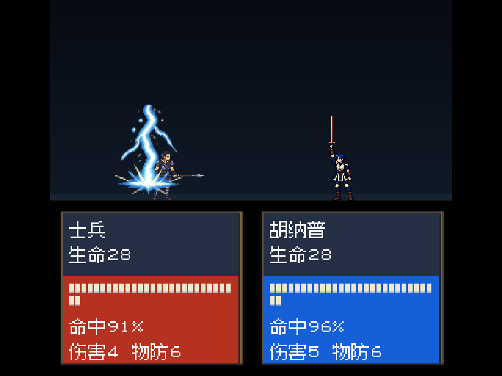
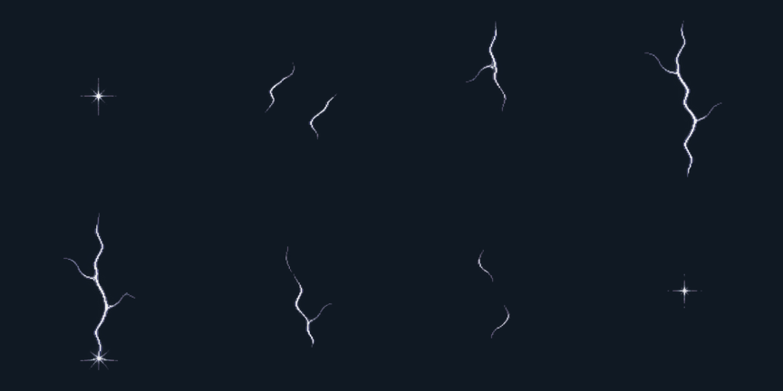
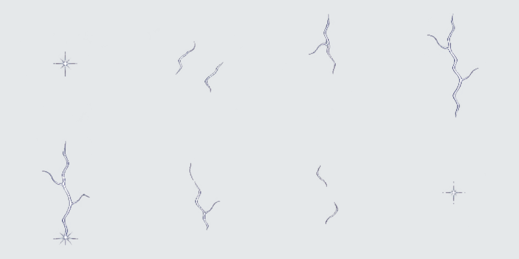

2026-10-26 · 雷电素材更新
细线雷电，低饱和灰蓝与淡银白
此版本已停用。按用户指定，当前已复用全动作对照中的现成改版雷电。查看当前版本；下方保留当批次制作记录。
重新绘制主干和分支，去掉原来的宽厚辉光与大块落点爆光，保留细小火花。人物轮廓和武器仍能清楚看见。
已接入当前本地源码。72种雷电演出的504处纹理引用统一更新；只修改雷电图片路径，播放帧序、命中时机、伤害与音频保持。未导出新应用或更新iPhone。
同一播放帧的运行对照



两图使用相同角色、画面尺寸和播放帧，仅替换雷电纹理。以下为其他代表性播放阶段与反向远程演出。全部是Godot后台渲染，非手机真机截图。


八阶段素材与透明边缘
每帧192×192，最大17,022字节。新素材在深、浅背景上检查边缘与完整轮廓；运行画面同时核对人物遮挡和文字安全区域。


验证与素材记录
五张后台运行画面的布局检查通过，72种演出绑定的资源路径均可加载。新旧数据除雷电纹理路径外逐项一致。本轮是素材调整，未重复执行五章通关。
运行素材：actual/assets/lightning-refine-20261026/lightning-0.png … lightning-7.png
原始源图：source/lightning-refine-20261026/lightning-source.png。使用内置imagegen生成，ImageMagick规则切图与缩放，oxipng无损压缩；原始源图保留。